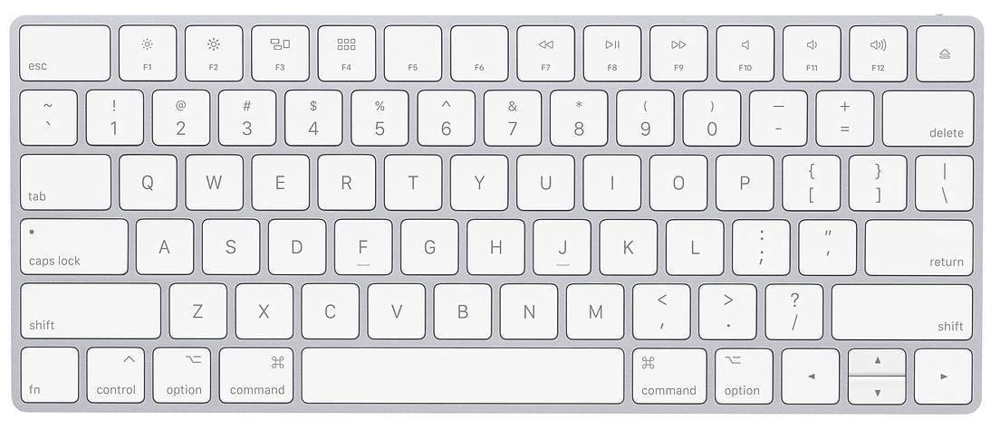
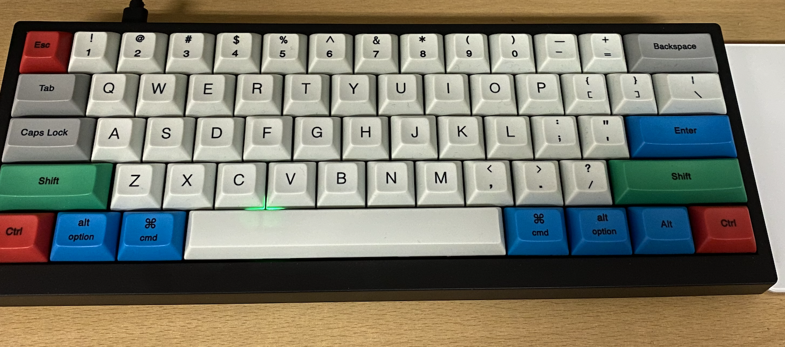
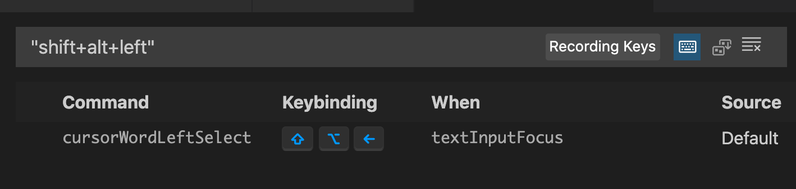
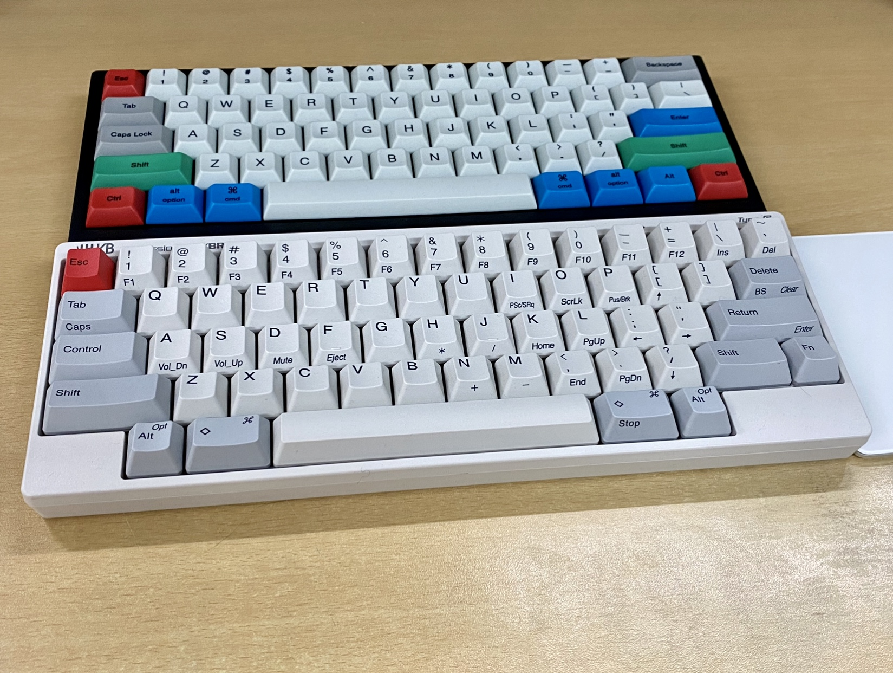
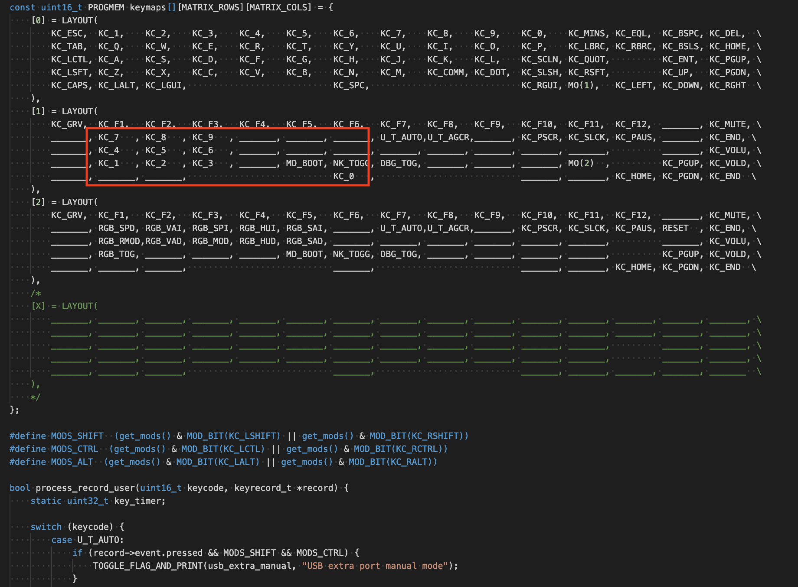

짧은 시간안에 꽤 다양한 키보드를 경험했다.
그 과정에 대한 기록을 남겨보려 한다.
풀배열 키보드, 텐키리스 키보드, 65%, HHKB, 60%, 40% …
엄청나게 다양한 종류의 배열을 가진 키보드가 시중에 존재한다.
여느 개발자가 그렇듯 나도 취업 직후엔 보편적인 텐키리스 키보드인 Realforce 87U를 사용했다.
그러다 2년여전 Mac 세계로 넘어오면서 매직키보드를 사용하게 됐는데,
이 것이 내가 처음 사용한 미니키보드라고 부를 수 있는 것이었다.

이 키보드는 그 당시 사용하던 단축키 사용법을 뒤엎게 만들었다.
코딩시 자주 사용하는 PgUp/PgDn, Home/End 를 사용하려면 fn + 방향키를 사용해야 했고,
결과적으론 기존에 2~3개의 키를 눌러 조작하던 것을 3~4개를 누르게 되었다.
불편함을 감수하고 몇주가 지나자 어느샌가 적응이 돼 있었다.
(이 때 미니키보드 사용을 포기하질 않길 잘 했다.)
그 당시 오른쪽 손목 통증이 살짝씩 있었는데, 이 작은 키보드를 쓰다보니 통증이 점차 줄어드는 것을 깨달았다.
오른쪽 손목 통증의 주 원인은
- 키보드 <-> 마우스 전환시 움직임
- alpha열 타이핑 <-> 방향키 조작시 움직임
크게 이 두가지로 보인다.
미니 키보드 특성상 이동 동선이 짧아지고, 이동의 횟수도 줄다보니 통증이 줄어든 듯 하다.
그 때 부터 미니키보드의 매력에 빠지게 되었다.
Code editing 능력도 상승된 것 같았다.
원래 기계식 / 무접점에 관심이 많았던 나이기 때문에,
본격적으로 미니키보드를 구매할 확실한 핑계가 생겼다.
그렇게 처음 구매한 기계식 미니 키보드는 Vortex Tab60.
 저소음 적축. 블루투스 됨.
본격적으로 방향키조차 없는 키보드!
펑션 열도 없어서, Fn 키와 숫자키를 조합해 사용한다.
별도 프로그램 없이 키바인딩 일부 수정 가능한 키보드였다.
Capslock을 Fn키로 리매핑해서 썼고, 그렇기에 왼쪽 새끼손가락으로 Fn키를 누르고,
[J, K, L, I]로 방향키 사용. 그 부근 키들이 Pg Up/Dn, Home/End 등.
오른쪽 손목 움직일 일이 더 줄어들었다.
하지만 더 괴랄한 단축키 조합..
예를 들어, 현재 커서를 선택과 함께 단어 단위로 왼쪽으로 이동 
- (기존) Shift + Option + ⬅️
- (변경) Shift + Option + Fn + J
하하.. 그래도 장점이 단점을 커버한다는 판단.
그리고,, 대망의 HHKB.
 미니키보드 형제.
왜 이것을 구매하게 되었는지 동기는 사실 잘 기억나지 않는다.
원래 관심이 있었으나 괴랄한 배열때문에 쉽게 도전하지 못했었는데,
Hybrid Type-s(블루투스 지원 신형 모델)의 출시로 과감해졌던 것일까.
가장 적응이 어려웠던 부분은 방향키 였다.
가장 좋았던 부분은 Delete의 위치!
타이핑시 가장 많이 사용하는 Key중에 하나가 Delete인데,
대부분의 키보드는 Delete가 숫자 열 최우측에 존재한다.
하지만 HHKB Layout에서는 alhpa 열 최우측에 있어서,
손목 움직임 없이 새끼손가락으로 Delete를 누를 수 있다.
뭐.. 키감도 매우 맘에 들었다. 지금까지 써본 모든 키보드중에 소음도 가장 적고.
이제는 더 편한 레이아웃을 찾는다기 보단.. 취미 생활의 수준이 되어버림.
 가장 최근에 구매한 Drop Alt 키보드.
가장 최근에 구매한 Drop Alt 키보드.
키캡, 스위치, 스테빌라이저 3가지 개조했다.
이 친구는 그래도 방향키는 잘 달려있다.
그리고 QMK가 지원되는 보드라서, 직접 키보드 firmware를 수정할 수 있다!

빨간 부분은 Layer1에 숫자 키패드 매핑해둔 것.
아직 심화 부분까지 건드려 보진 않았지만, 재밌고 유용한 것임은 분명하다.
앞으로의 키보드 취미 생활이 두렵다.
생각보다 돈이 많이 드는 취미였다는 것을 늦게 깨달았다.